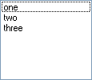

(string [, string ...], multicolumn = false )
Creates a Windows "listbox" control and calls AddItem for each of the supplied strings.
Xstretch and Ystretch default to 1.
If multicolumn is true, the ListBox will have a horizontal scroll bar and multiple columns of items.
For example:
Window(#(ListBox one two three))

Send's: